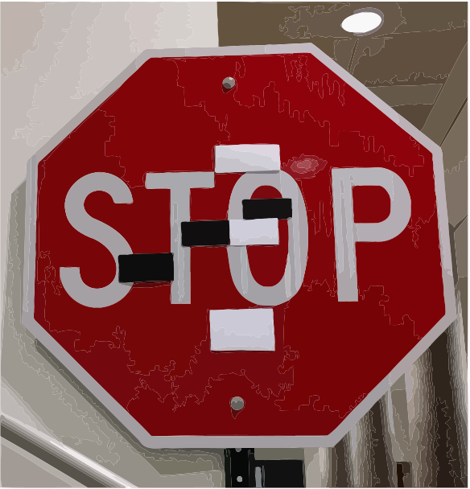
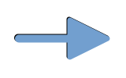
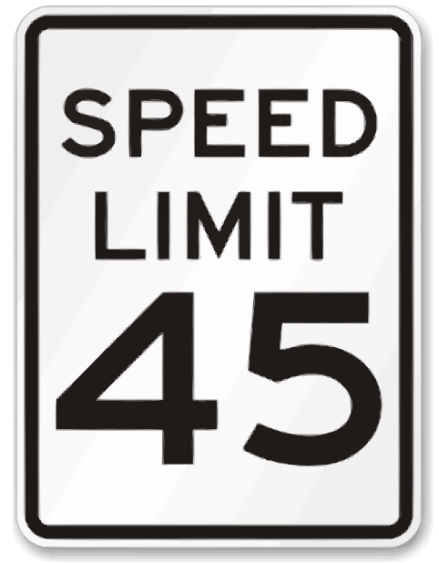
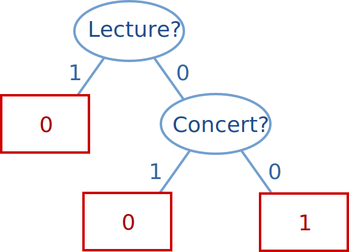
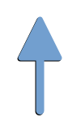
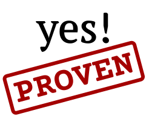

Towards Trustable Explainable AI
Alexey Ignatiev
Early Career Spotlight | IJCAI 2020
what's eXplainable AI?
©DARPA
why XAI?
because AI is ubiquitous in modern life!
self-driving cars
AI in banking

critical systems

and healthcare...
moreover,
ML models are "brittle"
easy to break!
adversarial example
© Evtimov et al. CoRR abs/1707.08945
the why? question
approaches to XAI:
interpretable ML models
(decision trees, lists, sets)
explanation of ML models "on the fly"
(any other model)
interpretable models
assume we are given this table
12345 | 1 Lecture 1 | 1 Concert 1 | 1 Expo 1 | 1 Shop 1 | 1 Hike? 1 |
|---|---|---|---|---|---|
\(e_1\) | 1 | 0 | 1 | 0 | 0 |
\(e_2\) | 1 | 0 | 0 | 1 | 0 |
\(e_3\) | 0 | 0 | 1 | 0 | 1 |
\(e_4\) | 1 | 1 | 0 | 0 | 0 |
\(e_5\) | 0 | 0 | 0 | 1 | 1 |
\(e_6\) | 1 | 1 | 1 | 1 | 0 |
\(e_7\) | 0 | 1 | 1 | 0 | 0 |
\(e_8\) | 0 | 0 | 1 | 1 | 1 |
when should we hike and when not?
decision tree 12
decision set
1234 if Lecture then \(\color{tred2} \neg\) Hike
1234 if Concert then \(\color{tred2} \neg\) Hike
1234 if \(\color{tblue2} \neg\) Lecture and \(\color{tblue2} \neg\) Concert then Hike
can be encoded into SAT
see our work
... but there are problems
these models are known to overfit
scalability?
online explanations
heuristic status quo
(LIME, Anchor, SHAP, etc.)
local explanations
no minimality guarantees
are they trustable?
input instance:
IF | (animal_name \(=\) pitviper) \(\land\) \(\neg\) hair \(\land\) | |
\(\neg\) feathers \(\land\) eggs \(\land\) \(\neg\) milk \(\land\) \(\neg\) airborne \(\land\) | ||
\(\neg\) aquatic \(\land\) predator \(\land\) \(\neg\) toothed \(\land\) \(\neg\) fins \(\land\) | ||
(legs \(=\) 0) \(\land\) tail \(\land\) \(\neg\) domestic \(\land\) \(\neg\) catsize | ||
THEN | 12 | (class \(=\) reptile) |
Anchor's explanation:
IF | \(\neg\) hair \(\land\) \(\neg\) milk \(\land\) \(\neg\) toothed \(\land\) \(\neg\) fins | |
THEN | 12 | (class \(=\) reptile) |
counterexample!
IF | (animal_name \(=\) toad) \(\land\) \(\color{tblue2} \neg\) hair \(\land\) | |
\(\neg\) feathers \(\land\) eggs \(\land\) \(\color{tblue2} \neg\) milk \(\land\) \(\neg\) airborne \(\land\) | ||
\(\neg\) aquatic \(\land\) \(\neg\) predator \(\land\) \(\color{tblue2} \neg\) toothed \(\land\) \(\color{tblue2} \neg\) fins \(\land\) | ||
(legs \(=\) 4) \(\land\) \(\neg\) tail \(\land\) \(\neg\) domestic \(\land\) \(\neg\) catsize | ||
THEN | 12 | (class \(=\) amphibian) |
alternatives?
apply formal reasoning!

cube \(\mathcal{I}\)
formula \(\mathcal{M}\)
prediction \(\pi\)
some invisible text \(\mathcal{I} \land \mathcal{M} \models \pi\)
given a classifier \(\color{tblue2} \mathcal{M}\), cube \(\color{tblue2} \mathcal{I}\) and a prediction \(\color{tblue2} \pi\),
compute a (cardinality- or subset-) minimal \(\color{tblue1} \mathcal{E}_m \subseteq \mathcal{I}\) s.t.
\(\color{tred3}\mathcal{E}_m\) is a prime implicant of \(\color{tblue2}\mathcal{M} \rightarrow \pi\)
def subsetmin_explanation(I, M, pi):
for f in I:
if entails(I - {f}, M->pi):
I <- I - {f}
return I
provably correct explanations
provides minimality guarantees
how?
given \(\mathcal{E}_h\), 1 \(\color{tred3} \mathcal{E}_h \models (\mathcal{M}\rightarrow \pi)\)
\(\color{tblue2} \mathcal{E}_h \land \mathcal{M} \land \neg{\pi}\) — satisfiable
(in fact, this formula can have many models!)
repairing \(+\) refining
incorrect explanation
IF | \(\neg\) hair \(\land\) \(\neg\) milk \(\land\) \(\neg\) toothed \(\land\) \(\neg\) fins | |
THEN | 12 | (class \(=\) reptile) |
repaired explanation
IF | \(\neg\) feathers \(\land\) \(\color{tred2} \neg\) milk \(\land\) backbone \(\land\) | |
\(\color{tred2} \neg\) fins \(\land\) (legs \(=\) 0) \(\land\) tail | ||
THEN | 12 | (class \(=\) reptile) |
what about measuring precision
of Anchor's explanations?
given model \(\color{tblue2} \mathcal{M}\), input \(\color{tblue2} \mathcal{I}\), prediction \(\color{tblue2} \pi\), and explanation \(\color{tblue2} \mathcal{E}\):
\(\color{tred3} prec(\mathcal{E}) = \mathbb{E}_{\mathcal{D}(\mathcal{I}' \supset \mathcal{E})}[\mathcal{M}(\mathcal{I}') = \pi]\)
alternatively, do approximate model counting for:
\(\color{tblue3} \mathcal{E} \land \mathcal{M} \land \neg{\pi}\)
(in fact, a bit more complicated but the idea is here)
unconstrained feature space 1234567890 samples with \(\color{tred3} \leq\) 50% difference
adversarial examples vs explanations
is there a relation?
given a classifier \(\color{tblue1}\mathcal{M}\) and prediction \(\color{tblue1}\pi\),
1 counterexample \(\color{tred3}\mathcal{C}\): 1 | 1 explanation \(\color{tblue2}\mathcal{E}\): 1 |
|---|---|
\(\color{tred3}\mathcal{C}\models\bigvee_{\rho\neq\pi}(\mathcal{M}\rightarrow\rho)\) | \(\color{tblue2}\mathcal{E}\models(\mathcal{M}\rightarrow\pi)\) |
every \(\mathcal{E}\) of \(\pi\) breaks every \(\mathcal{C}\) to \(\pi\)
every \(\mathcal{C}\) to \(\pi\) breaks every \(\mathcal{E}\) of \(\pi\)